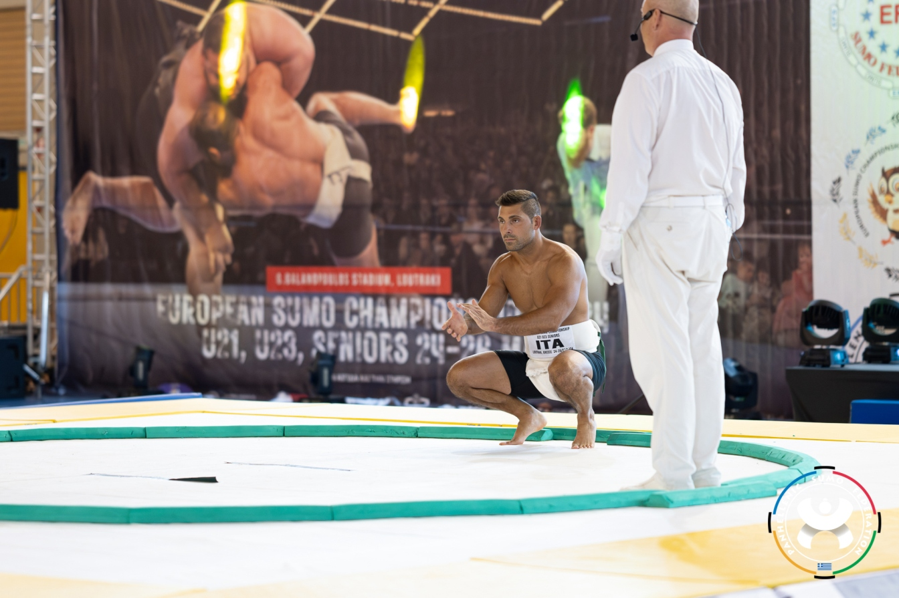

Η διαχείριση του άγχους αποτελεί κρίσιμη δεξιότητα για την υγεία και την ψυχολογική ανάπτυξη τόσο των παιδιών όσο και των ενηλίκων. Η διερεύνηση των μηχανισμών του άγχους, η αναγνώριση των σωματικών και συναισθηματικών του σημαδιών και η εκμάθηση στρατηγικών αυτορρύθμισης είναι θεμελιώδεις για τη βελτίωση της ποιότητας ζωής.
Το άγχος είναι φυσιολογική αντίδραση σε απαιτητικές καταστάσεις, ενεργοποιώντας τον μηχανισμό “fight or flight” (Cannon, 1932). Σε παιδιά και ενήλικες, η υπερβολική ενεργοποίηση αυτού του συστήματος μπορεί να οδηγήσει σε σωματικά συμπτώματα (ταχυκαρδία, αυξημένη πίεση, μυϊκή ένταση) και σε ψυχολογικές δυσκολίες (μειωμένη προσοχή, συναισθηματική ευαισθησία, προβλήματα ύπνου) (Lazarus & Folkman, 1984).
Η ψυχολογική βιβλιογραφία αναγνωρίζει ότι η ανάπτυξη δεξιοτήτων αυτορρύθμισης και διαχείρισης στρες είναι κρίσιμη για τη μάθηση, την κοινωνική προσαρμογή και την ψυχική ανθεκτικότητα (Compas et al., 2017; McEwen, 2007).
Μελέτες δείχνουν ότι η εκπαίδευση σε συνειδητή αναπνοή, χαλάρωση των μυών, προοδευτική έκθεση σε στρεσογόνες καταστάσεις και καθοδηγούμενη νοερές προσομοιώσεις (visualization) μειώνουν τα επίπεδα κορτιζόλης και αυξάνουν τα επίπεδα ενδορφινών, βελτιώνοντας τη διάθεση και τη συγκέντρωση (Grossman et al., 2004; Chiesa & Serretti, 2009).
Στα παιδιά, η καθοδήγηση από ενήλικες, η χρήση παιχνιδιών, και η διδασκαλία στρατηγικών αντιμετώπισης άγχους είναι κρίσιμες. Στους ενήλικες, η αυτοπαρατήρηση, η εκτίμηση των προσωπικών ορίων και η ρουτίνα στην άσκηση μειώνουν σημαντικά τις επιπτώσεις του στρες.
Οι πολεμικές τέχνες, και ιδιαίτερα το Σούμο, παρέχουν ένα ιδανικό περιβάλλον για πρακτική εφαρμογή δεξιοτήτων διαχείρισης άγχους. Το Σούμο, ως παραδοσιακή ιαπωνική πολεμική τέχνη (Budo), συνδυάζει:
Στις προπονήσεις Σούμο, οι αθλητές μαθαίνουν να αντιμετωπίζουν αγχωτικές καταστάσεις (αγώνες, ανταγωνισμό) με ψυχραιμία, να αξιολογούν τις κινήσεις τους σε πραγματικό χρόνο και να αναπτύσσουν στρατηγική σκέψη. Η πρακτική αυτή έχει μετρηθεί επιστημονικά ως αποτελεσματική στη μείωση των επιπέδων κορτιζόλης και στην αύξηση των ενδορφινών, βελτιώνοντας τόσο τη διάθεση όσο και τη γνωστική λειτουργία (Kim et al., 2016; Lakes & Hoyt, 2004).
Το Σούμο ανήκει στην οικογένεια των συστημάτων Do (δρόμοι ανάπτυξης χαρακτήρα), όπως το Karate-do, το Judo, το Kendo, το Reikido, η Ιαπωνική Καλλιγραφία (Shodo), η τέχνη Chado... Στόχος τους δεν είναι μόνο η σωματική δεξιότητα αλλά η προσωπική και ηθική ανάπτυξη.
Η συμμετοχή σε πολεμικές τέχνες διδάσκει ότι:
Για το παιδί, η ενασχόληση με το Σούμο ή άλλες πολεμικές τέχνες δεν είναι απλώς άθλημα, αλλά διαδικασία διαμόρφωσης χαρακτήρα, ανάπτυξης ψυχικής ανθεκτικότητας και καλλιέργειας κοινωνικών δεξιοτήτων που θα το συνοδεύουν σε όλη του τη ζωή.
Η διαχείριση του άγχους αποτελεί θεμελιώδη δεξιότητα για κάθε ηλικία. Η εφαρμογή επιστημονικά τεκμηριωμένων στρατηγικών, σε συνδυασμό με την πρακτική πολεμικών τεχνών όπως το Σούμο, επιτρέπει την ολιστική ανάπτυξη:
Η ενασχόληση με πολεμικές τέχνες αποτελεί συνεπώς επένδυση στην ψυχολογική και προσωπική ανάπτυξη και όχι απλώς συμμετοχή σε άθλημα. Μερικές φορές μια κουβέντα του δασκάλου επαναφέρει τον μαθητή σε μια συνεχή κατάσταση ηρεμίας.
